Food as a Travel Theme
One thing that unites all my trips is food. Whether it’s a tiny diner off the highway or a bustling farmer’s market downtown, good meals make places memorable. Traveling as a college student taught me that incredible cuisine doesn’t have to come with a high price tag—what matters most is curiosity and a willingness to explore beyond the obvious.
In California, every region feels like its own world of flavor. Coastal towns Like San Francisco served the best trout and seafood. One of my favorite restaurant actually had a Michelin Star: State Bird Provisions! It was so affordable and we ended up spending less than $200 for 3 people with multiple courses! San Francisco surprised me with affordable fusion cafés tucked away in narrow streets, and fine dining at an inexpensive price. Even gas station snacks in the desert can be unexpectedly amazing.
While small towns and rural areas may not be considered a culinary capital, food there was exceptional as well! I truly believe part of the adventure lies in trying new cuisines in the strangest of places: whether that's Native American fry bread on a reservation, shrimp and grits in a town of 100 people, or cannolis from Little Italy, California really proved that they have it all 🌟
Food tells stories about place and people. It teaches you patience, appreciation, and creativity. I’ve learned that some of the most meaningful travel moments come not from where you eat, but who you share the table with. 🥰
Featured Food Photos

 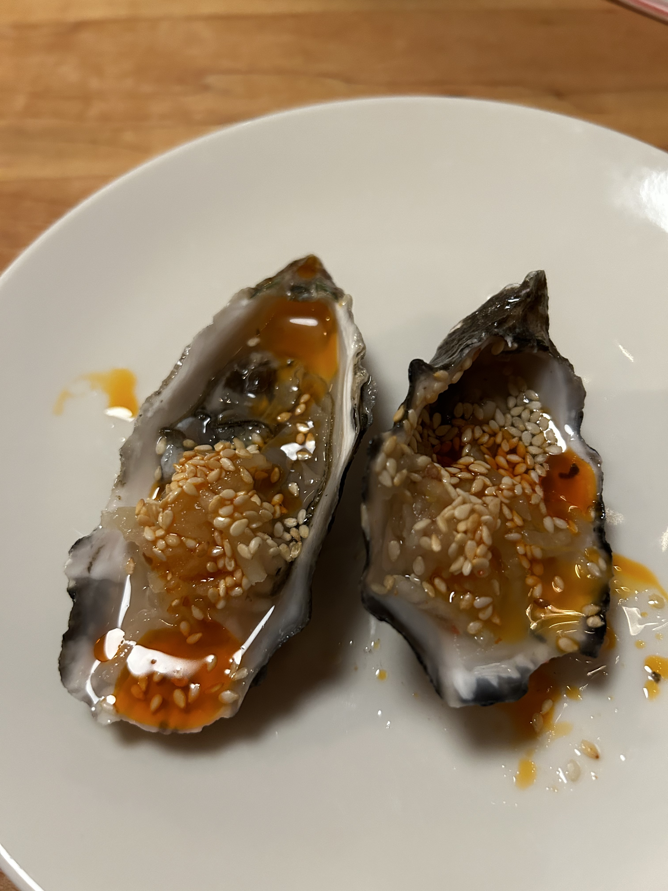
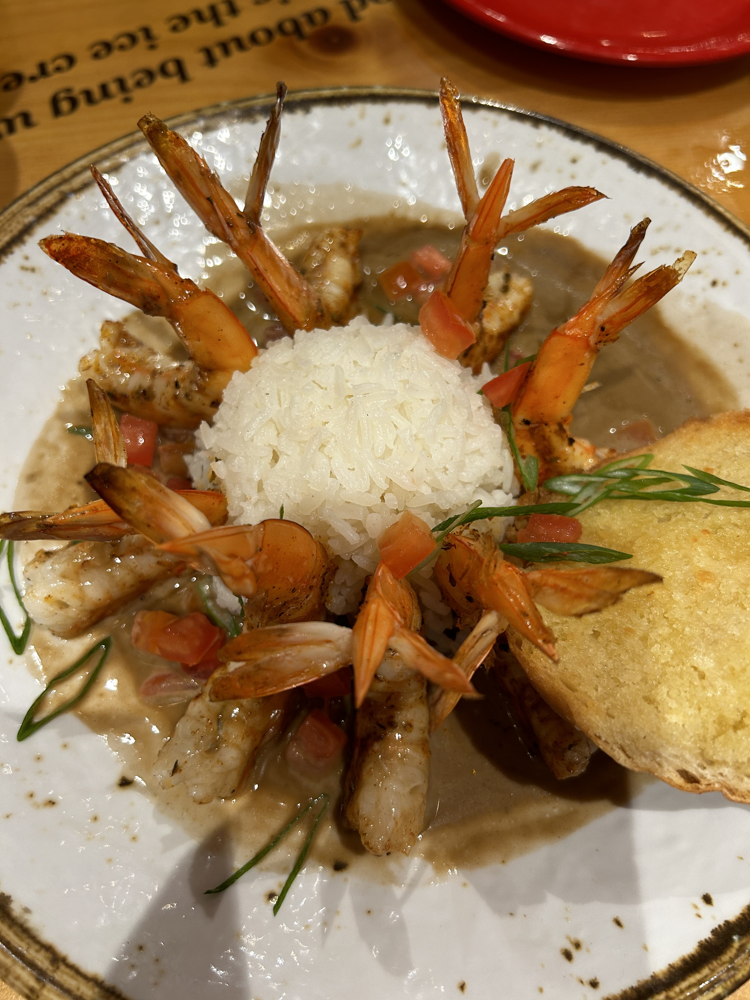
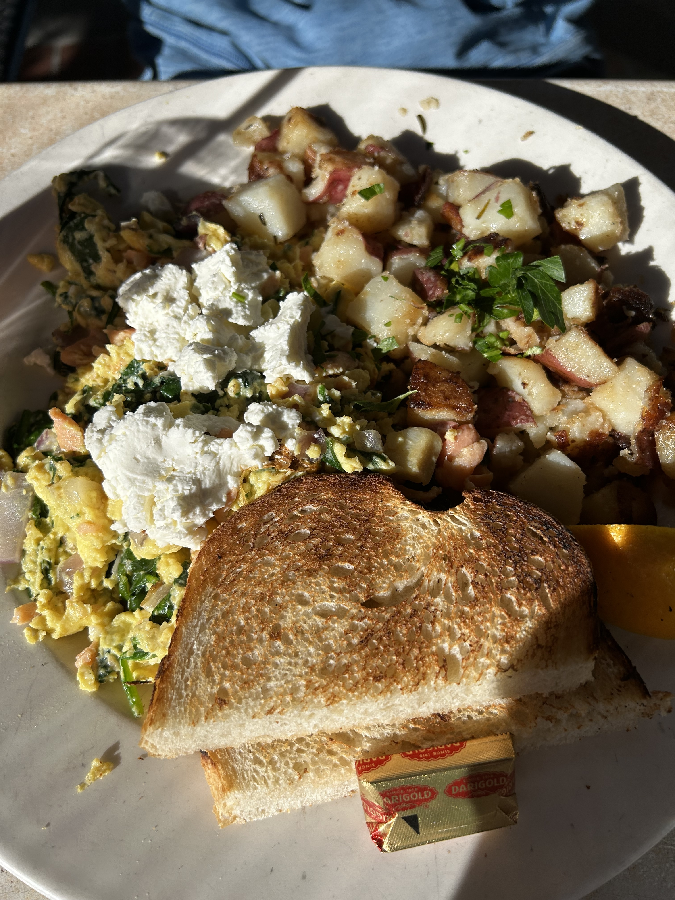
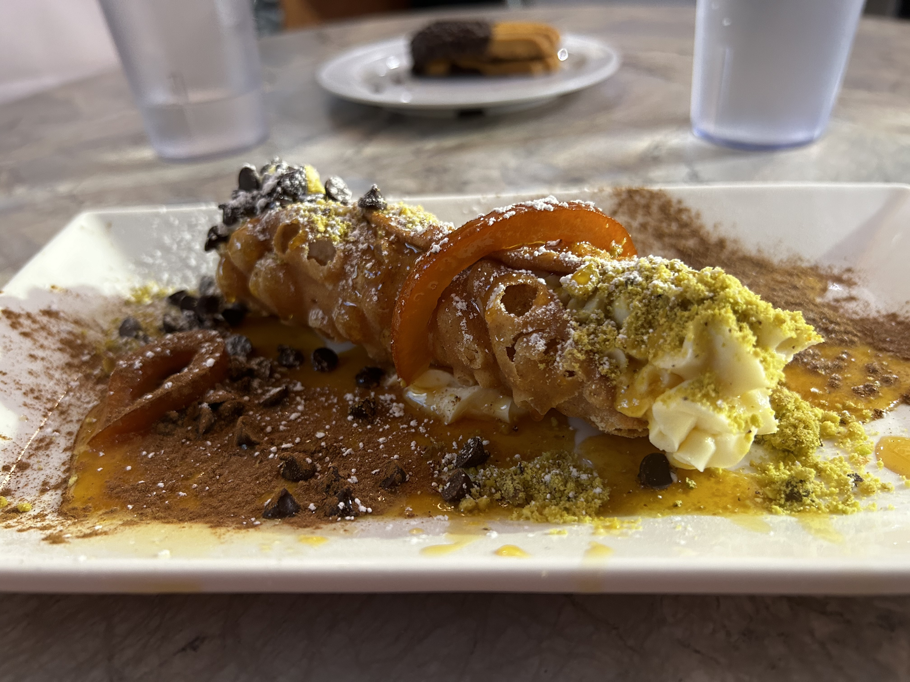
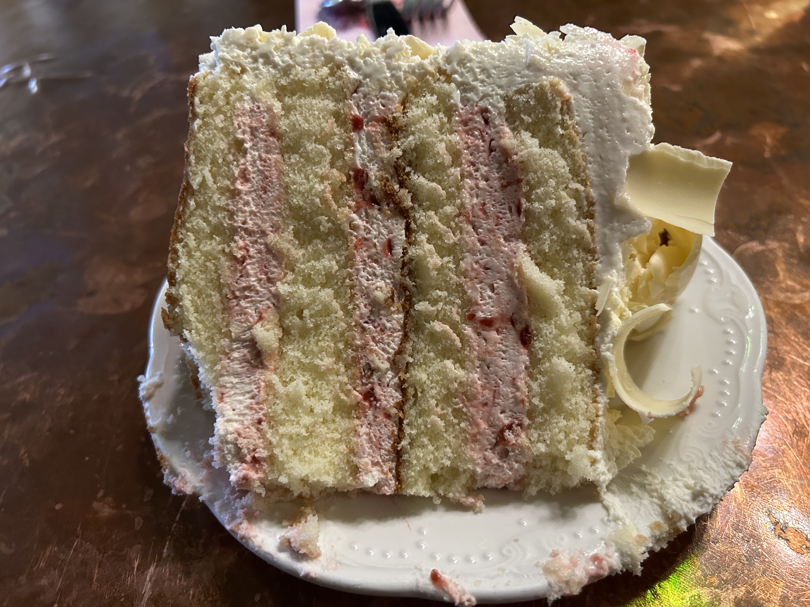
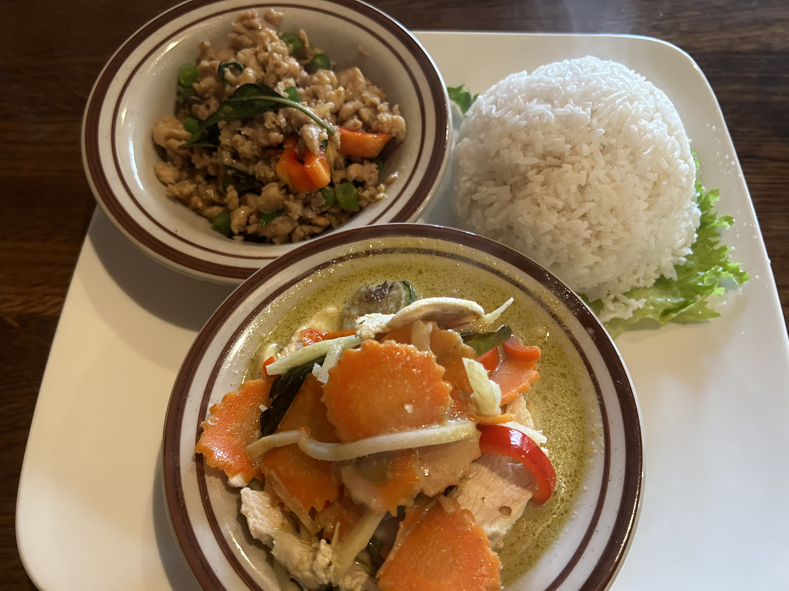
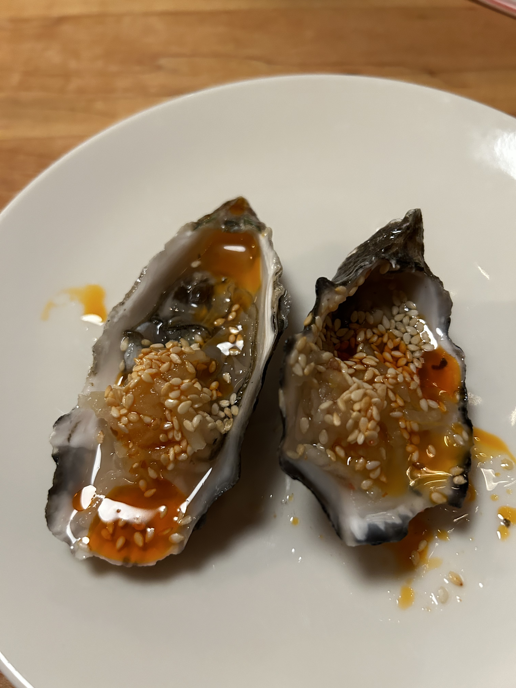
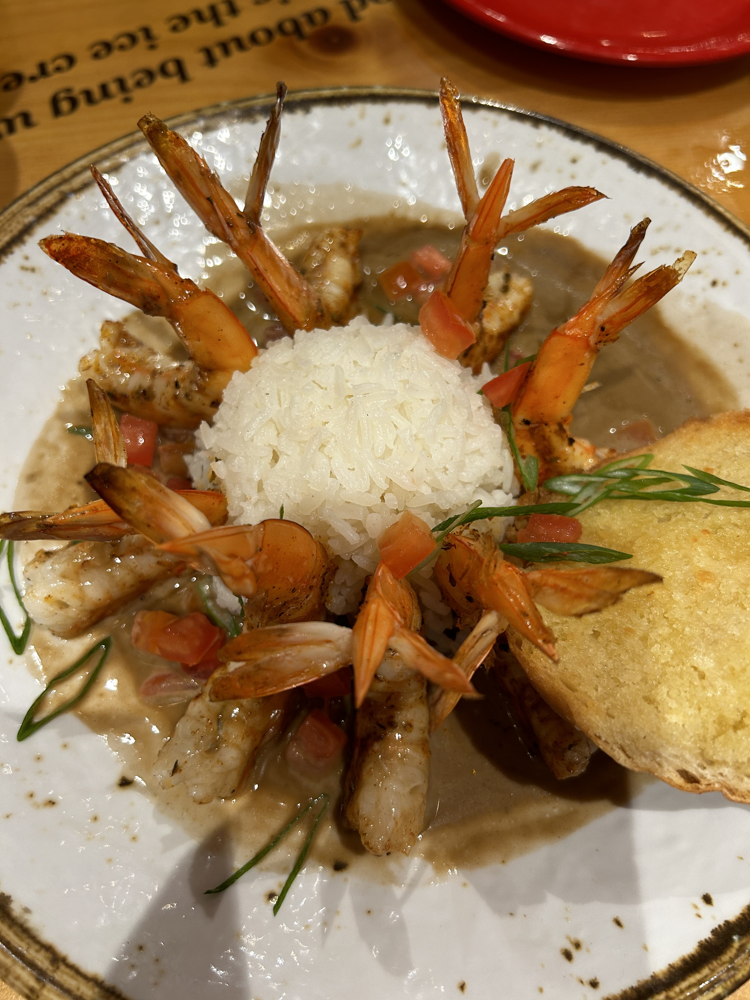
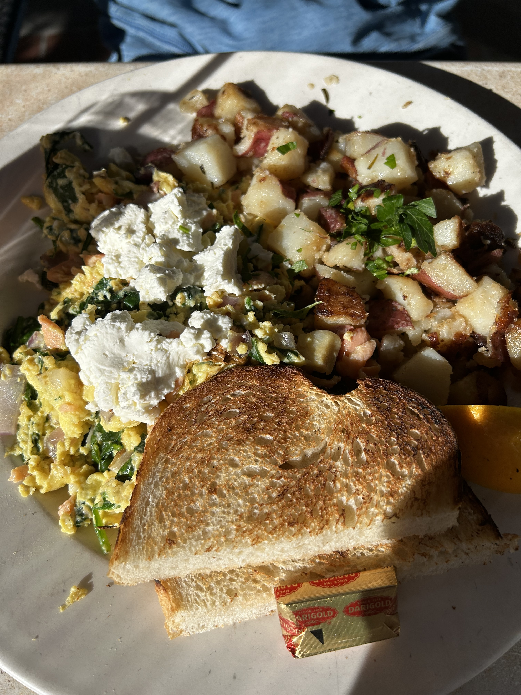
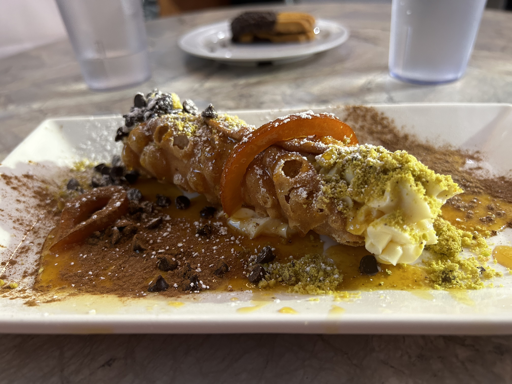
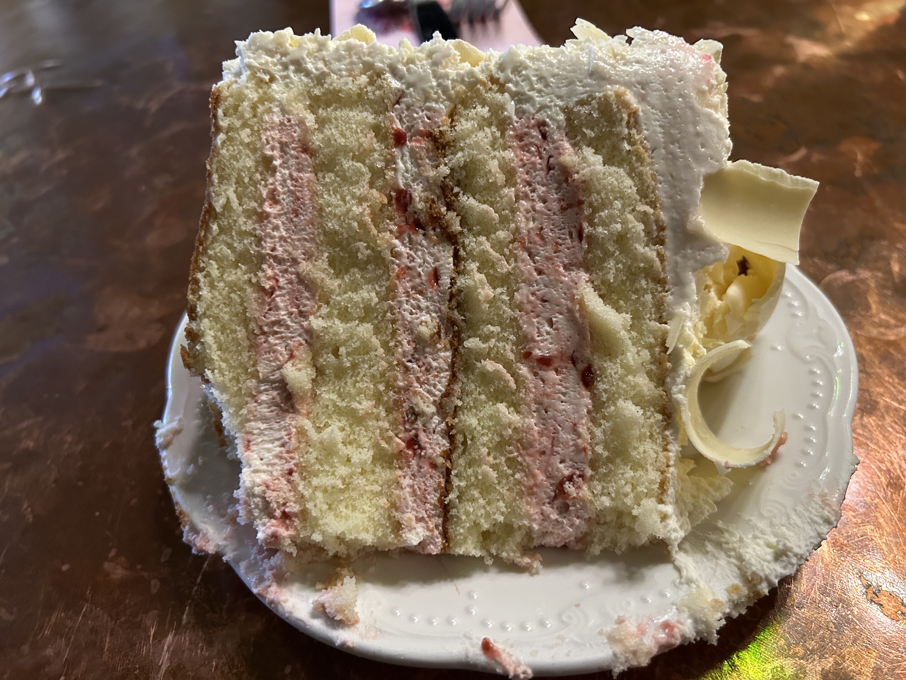
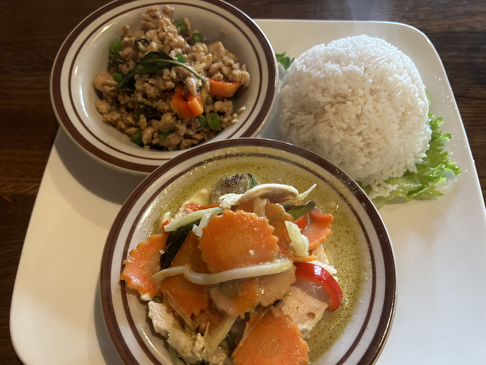
These are some of my favorite meals I enjoyed in California 💛💙🤎🩷💜